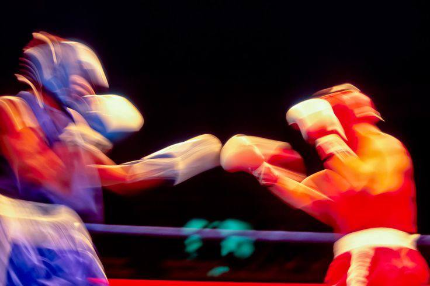
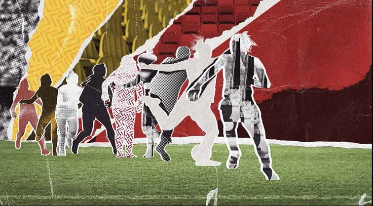
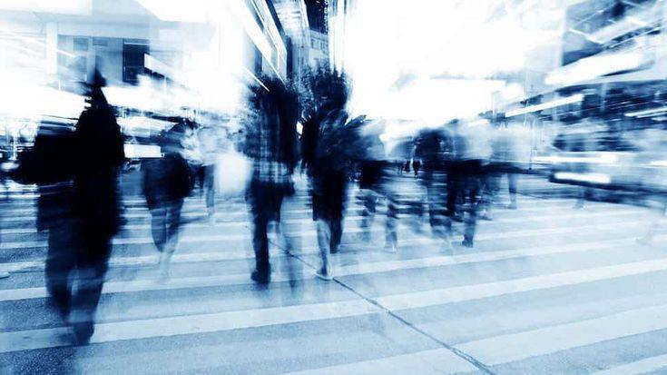
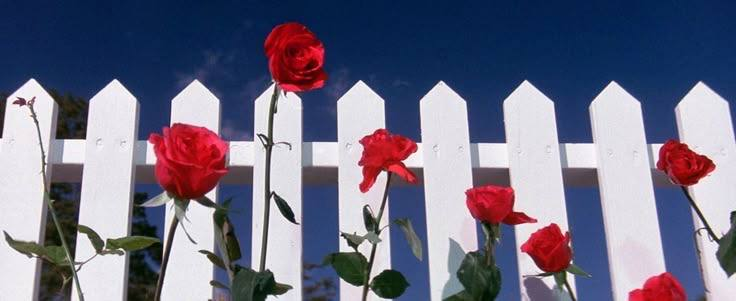
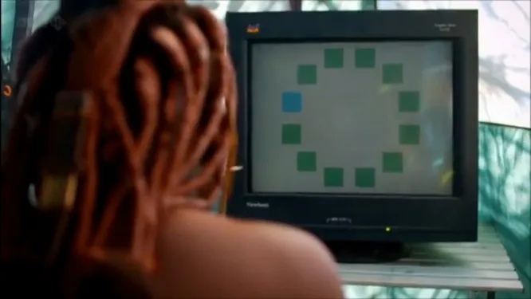
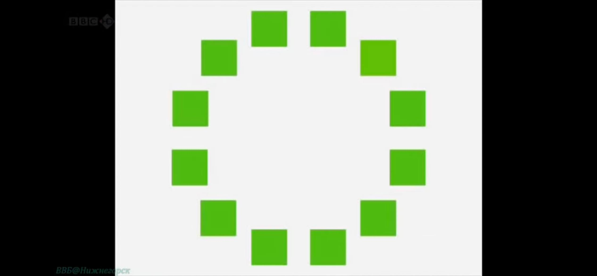
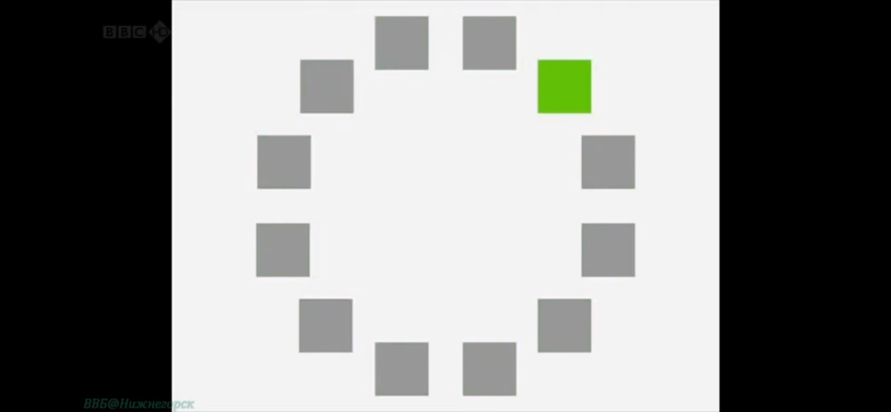
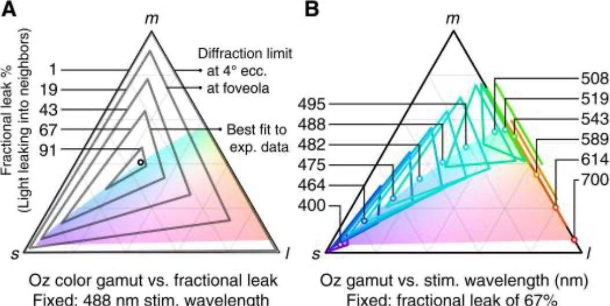

Главный материал
Способен ли язык определить,
как мозг анализирует мир?
Журнал о восприятии мира
01 / Цвет и восприятие
Цвет — это неотъемлемая часть наша жизни. Он влияет на все, что мы делаем. Вот мы видим желтые листья на деревьях осенью, голубое небо, но правда ли они такие? На самом деле, цвет иллюзия, которая помогает нам видеть мир в удобных оттенках.
Как мы различаем цвета и видим ли мы их одинаково?
Красный цвет и спорт
Что если я вам скажу, что спортсмены в красной форме помогают помогать в поединках и соревнованиях? Почему так происходит?

В футболе есть поверье что красный цвет приводит к победе.
И был проведен эксперимент, в ходе которого собрали команду футболистов, они не знали суть эксперимента и самостоятельно разделились на команды синей и красной формы. Главная задача ученых была выяснить делает ли красная форма сильнее самого человека или пугает его соперника? Они взяли у футболистов два гормона, тестостерон и кортизол.
У красной команды уровень кортизола был меньше, чем у синей. Красный цвет, скорее всего, помогает футбольным клубам благодаря психологическому эффекту, который он оказывает на них и их соперников. Антропологи указывают на эксперименты психологов, которые доказали, что у человека при взгляде на красное снижается способность к проявлению лучших качеств.

02 / Цвет и время
Могут ли цвета изменить чувство времени?
Эксперимент с кабинами
Иногда более возбуждающие или эмоционально значимые цвета воспринимаются как длящиеся дольше. Бывает же такое когда кажется что день длится просто бесконечно. Так же и с цветами.
Людей поместили в кабинки с цветами где преобладает красный и синий, и нужно было понять, сколько по их мнению длится минута и подать знак, когда минута закончится.
И оказалось, что в синей кабинке минута длится на 11 секунд меньше, чем в красной.

Дело в том, что красный вызывает состояние возбуждения, мы больше сосредоточены на деталях, а синий ускоряет восприятие времени. Синий как цвет отражает физиологическую и психическую потребность, а именно покой.
Если продолжать говорить про синий и красный, то согласно закону Йеркса Додсона, при выполнении простых задач высокий уровень возбуждения (связанный с красным цветом) более эффективен, чем низкий (связанный с синим цветом). Напротив, при выполнении сложных задач низкий уровень возбуждения (связанный с синим цветом) более эффективен, чем высокий (связанный с красным цветом). И получается, что тип и сложность задач влияют на цветовой эффект через мотивацию и возбуждение соответственно.
Было проведено два эксперимента:
1. В первом изучали внимание к деталям: красный фон оказался связан с более высокой точностью в простых заданиях, а синий — в сложных.
2. Во втором изучали творческое мышление: участники на синем фоне в среднем показали более высокую точность, чем участники на красном и сером. При этом взаимодействие цвета со сложностью задания статистически значимым не было.
Исследование действительно обнаружило различия в точности выполнения конкретного задания. Но из этого не следует, что красный всегда улучшает концентрацию, а синий делает человека умнее или лучше решает любые сложные задачи.
Причины такого эффекта могут быть разными: психологические ассоциации с цветом, уровень возбуждения, особенности восприятия или другие факторы. Чтобы уверенно установить механизм, потребуются дополнительные исследования.
03 / Цвет и наше поведение
Влияние цвета на наше поведение
Думаю, многие знают, что цвета красный и коричневый вызывают чувство голода, поэтому чаще всего в ресторанах кафе, преобладает красный цвет. Но один дизайнер решил изменить такую концепцию и вместо красного он выбрал синий. Мы помним, что синий цвет вызывает покой, но каждый вечер около 10 часов поведение посетителей менялось. По сути они должны быть более расслабленными, но в итоге они были более возбуждены и энергичны.
Как свет попадающий в глаз регулирует время?
Помимо колбочек и палочек, есть еще один класс:
Это фоточувствительный ганглий.
Эти клетки регулируют биологические часы, уровень возбуждения, бдительности и помогают синхронизировать циклы сна и активности с окружающим освещением. И самое интересное эта клетка, которая посылает сигнал в мозг чтобы вы проснулись чувствительна только к одному цвету синему, поэтому посетители этого заведения оживлялись в 10 вечера.

04 / Язык и зрение
Влияние языка на восприятие цветов
Сейчас я расскажу свой любимый эксперимент, который мне так запомнился.
Северная Намибия. Народ Химба очень необычно различают цвета. И учёный Джулии Давидофф провел исследование. Эксперимент проводился в местном племени, которое говорит на языке, где нет определения синему цвету и отсутствуют различия между голубым и зелёным. Местным жителям был показан круг с 11 зелёными квадратами и одним голубым, и в итоге члены племени лишь с трудом смогли найти различия.

У народа Химба имеется больше слов для обозначения зеленого цвета, чем у нас. В схожем эксперименте Дафидофф совместно с коллегами демонстрировал круг из 12 квадратов англоговорящим людям: 11 квадратов были зеленого цвета одного оттенка, а один – зеленого цвета отличного оттенка. И если у народу Химба потребовалось пару секунд, чтобы обнаружить квадрат другого оттенка, то англоговорящим участникам потребовалось куда больше времени.

Джули Давидофф сделал вывод, что без слова, определяющего цвет, без способа его идентификации, нам очень сложно заметить какое-то различие, хотя наши глаза физически их воспринимают.

Еще для примера, носители английского языка считают цвета, которые пересекают границу английской категории между зеленым и синим, менее похожи, чем носители Тарахумара, уто-ацтекского языка Мексики, который использует одно слово для этих цветов.
В отличие от английского, русский язык проводит различие между более светлым синим (goluboy) и более темным синим (siniy), и русскоговорящие быстрее, по сравнению с англоговорящими, в различении двух цветов, когда они попадают в разные категории, один голубой, а другой синий, чем, когда они принадлежат к одной категории.
Также в 2007 был проведён эксперимент между русскоговорящими и англоговорящим. Им нужно было выполнять задачи на границе категорий «голубой/синий». Испытуемым показывали 20 стимулов (по два раза) в случайном порядке и просили классифицировать каждый цвет нажатием клавиши: синий или голубой (для русскоговорящих) или темно-синий или светло-синий (для англоговорящих). И обнаружили, что русские якобы быстрее различают синий и голубой именно потому, что в русском это две разные категории.
Эти результаты также показывают, что языковые категории влияют на выполнение простых задач на восприятие цвета.
05 / Границы цвета
Можно ли придумать
новый цвет?
Я думаю, каждый когда-нибудь задумывался о том, можно придумать новый цвет и усердно пытался представить его у себя в голове. Был эксперимент в котором приняли участие тридцать один взрослый студент Пекинского колледжа. Ни у кого не было неврологических или психиатрических заболеваний, не было дальтонизма. Все испытуемые были правшами. Почему это важно? У большинства людей левое полушарие сильнее участвует в обработке языка.
Участники были разделены на две группы: экспериментальная группа (n = 18), члены которой прошли интенсивную подготовку для получения новых названий цветов (рис. 1 A и B) и контрольная группа (n = 13), члены которой выполняли те же задачи, что и в экспериментальной группе, но связывали цвета с ужа существующими, стандартными названиями, а не вводили новые лексические категории.
Перед экспериментом всем испытуемым был проведен сине-зеленый лексический тест. В каждом испытании квадратный стимул (один из четырех цветов, G1, G2, B1 и B2) был представлен в центре на сером фоне в течение 200 мс, за которым следовал интервал в 1000 мс. Участники указывали, был ли цвет зеленым или синим, нажав одну из двух клавиш.
Исследователи обнаружили, что после обучения новые категории цветов влияли на восприятие по-разному в зависимости от того, в каком зрительном поле появлялся цвет. Это согласуется с тем, что язык может влиять на то, как мозг группирует и различает оттенки.
Значит ли это, что люди научились видеть новый цвет?
Не совсем. В эксперименте не создали новый цвет в физическом смысле и не доказали, что участники начали испытывать совершенно новое зрительное ощущение. Участники научились по-новому классифицировать уже доступные зрению оттенки, и это отразилось на выполнении зрительных задач.
Здесь два треугольных графика. Я простыми словами постараюсь донести как это всё работает.

Эти треугольники показывают насколько точно система может создавать разные цвета и что мешает ей это делать.
Вершины треугольника обозначены буквами:
L длинноволновые колбочки, которые наиболее чувствительные к длинным волнам света.
M средневолновые колбочки.
S коротковолновые колбочки.
Каждая вершина соответствует максимально выраженному сигналу одного типа колбочек, а точки внутри треугольника различным сочетаниям сигналов.
По вертикальной шкале слева указана доля света, попадающего в соседние участки сетчатки, в процентах и чем сильнее свет распространяется на соседние колбочки, тем труднее активировать только нужные рецепторы. Поэтому доступный цветовой диапазон уменьшается.
Здесь исследуется, как меняется цветовой диапазон при использовании света с разной длиной волны.
На рисунке указаны значения от 400 до 700 нм, включая 488, 508, 519 и 543 нм.
Колбочки имеют перекрывающиеся спектры чувствительности. Один и тот же лазер может активировать несколько типов колбочек, но в разных пропорциях.
Меняя длину волны, можно изменить соотношение этих сигналов. Поэтому меняется и набор цветов, который система потенциально способна воспроизвести. Так и получается, что невозможно идеально направить свет на одну колбочку, не затронув соседние, и независимо управлять всеми тремя типами колбочек.